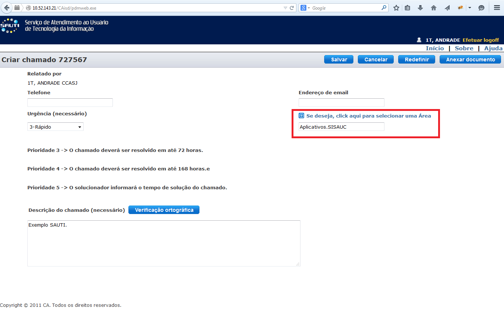

O SISAUC foi concebido em um curto intervalo de tempo para atender demandas emergentes na Saúde Complementar da Aeronáutica, portanto, embora tenha sido desenvolvido por um conjunto de especialistas, muitas revisões poderão ocorrer. Sugestões e comentários sempre serão bem-vindos.
Contatos podem ser feitos através do SAUTI, conforme tela abaixo:
